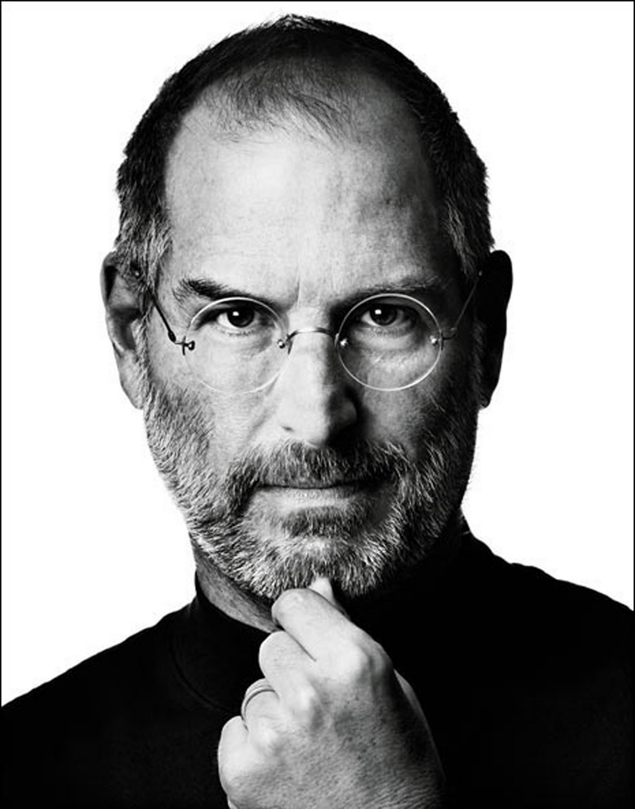

Steve Jobs Legacy

The iconic picture of Steve Jobs
Here is a timeline of the major stops in Stevie's life
- 1973: Steve spends the fall semester at Reed College, Oregon, then drops out. He will stay on campus and attend the classes that interest him for a while, then move to a hippie commune
- 1974: Steve gets his first job at video game maker Atari, and later makes a trip to India to 'seek enlightenment' with his college friend Dan Kottke
- Spring 1976: Steve and Woz start assembling Apple I computers in the Jobses' garage, and sell them to computer hobbyists, including 50 for the Byte Shop
- 19 Jan 1983: Launch of the Lisa computer. The Lisa team later merges with the Mac team under Steve Jobs's leadership
- May 1985: Palace coup: Apple's board sides with John Sculley and strips Steve off all executive duties